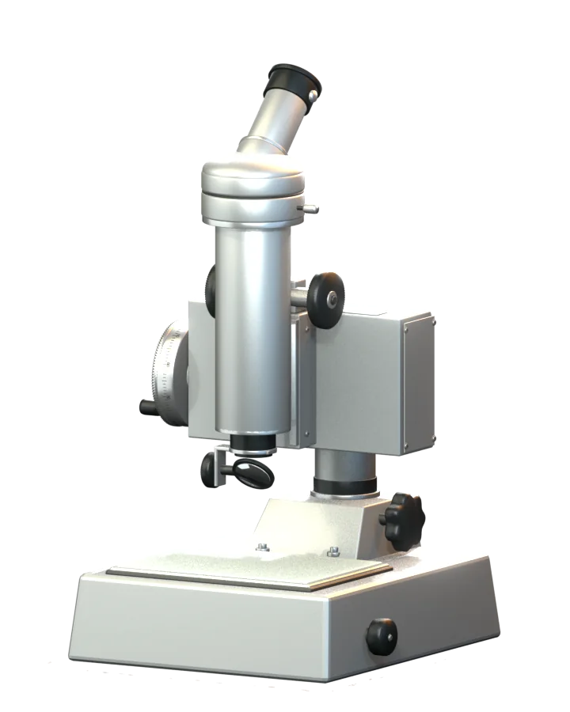
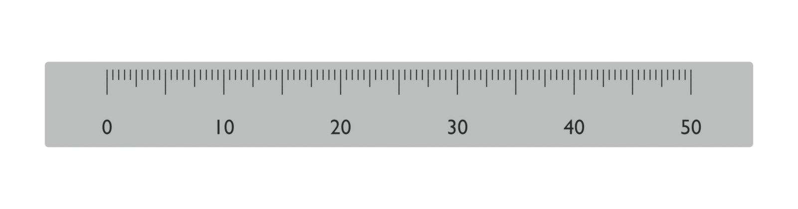
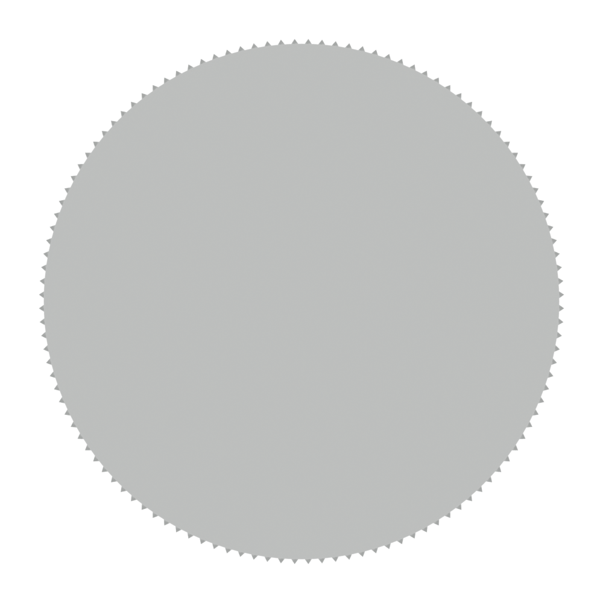

Δ = 2nd
+
λ2
在介质折射率小于平板玻璃时，下表面反射会产生半波损失。
02 / PRINCIPLE
平凸透镜与平板玻璃相切，中心向外形成厚度连续增大的介质薄膜。 同一圆周上的薄膜厚度相同，反射光在此叠加，形成明暗相间的同心环。
在介质折射率小于平板玻璃时，下表面反射会产生半波损失。
通过两个不同级次暗环直径的差值，消去中心位置和附加相位误差。
03 / INSTRUMENTS
三套仪器均由 Blender 场景分层渲染。选择仪器后可拖动查看不同方位， 显微镜还可点亮目镜、物镜、调焦手轮与测微鼓轮。

04 / OPERATION
左侧完整装置支持旋转观察，可直接拖动测微鼓轮或调节滑杆。测量台的微小位移会同步呈现在右侧视场中， 同时更新主尺与鼓轮读数。
读数 = 主尺示数 + 鼓轮格数 × 0.01 mm

主尺与游标均为 Blender 实体建模，观察指标线所在位置读取整数刻度。

拖动盘面转动鼓轮，或使用方向键微调。
盘面取自 Blender 鼓轮模型，外圈按模型 00–99 分格放大显示并同步旋转。
开启钠光灯，等待黄光稳定。
将牛顿环仪放到载物台中心。
调整光路，使单色光垂直照射。
旋转目镜，使十字叉丝清晰。
调焦至同心环边缘锐利。
沿同一方向转动鼓轮，减小空程误差。
05 / INNOVATION
现为操作演示，点击连接摄像头和编码器将实时同步真实数据。 过程档案包含编码器实时曲线、历史采样、实验事件流与导出功能，内容在模块内部滚动查看。
06 / DATA PROCESSING
录入暗环左右读数，系统自动计算直径并完成 D² = bk + c 最小二乘拟合， 同步给出曲率半径、标准不确定度与拟合优度。
| 环序 k | 左读数 / mm | 右读数 / mm | 直径 D / mm | 删除 |
|---|
标准不确定度 u(R) 待计算
曲率半径由 R = b / (4λ) 得到，其中 λ 已由 nm 换算为 mm。
07 / PRE-LAB CHECK